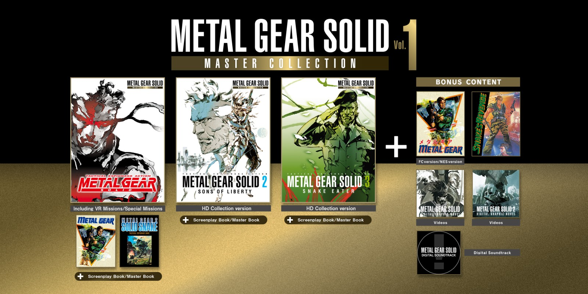
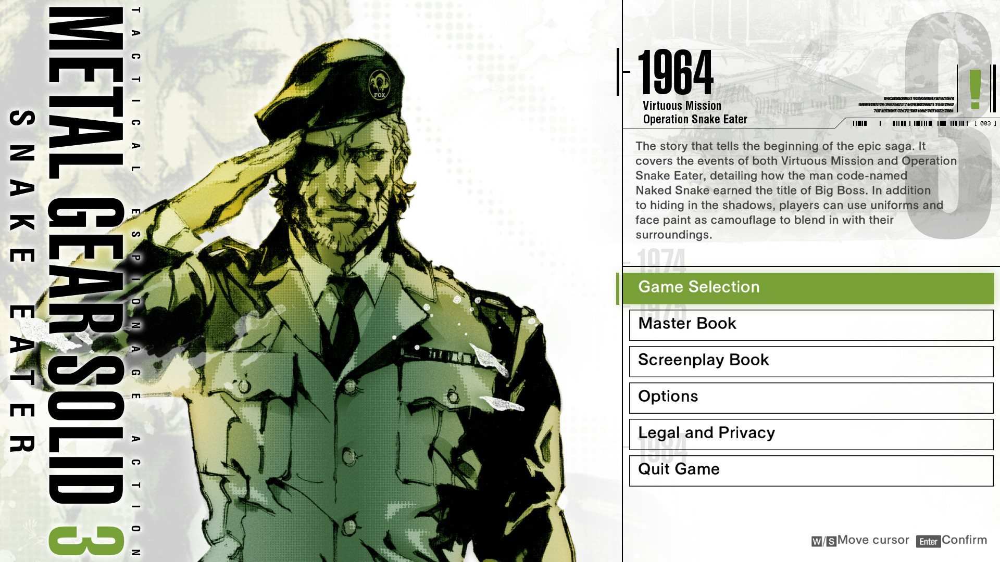
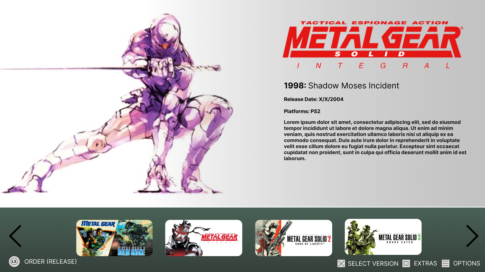

UI Redesign: Metal Gear Solid Collection Vol. 1
A concept redesign for the Metal Gear Solid: Master Collection Vol. 1, focusing on providing a simple-yet-consistent menu to showcase and celebrate the series.
Overview
Metal Gear Solid is a long-running gaming franchise, releasing instalments starting in the early 90s and is one of the biggest IPs developed by Japanese publisher, Konami.
Despite its beloved legacy, the vast majority of the games have been unplayable on modern hardware, with the last compliation releasing in 2011 on the Xbox 360 and PS3. In 2023, it was announced that a new collection containing the first five games in the series would be released.
Problem
Known for its complex lore and timeline, the Metal Gear series can be difficult for newcomers to understand and get into.
The current Master Collection also features each app separately, which doesn’t help give a new user the best understanding of where to begin, requiring multiple exits of each app to switch between games.
Final Design
Design Process
From the beginning, I wanted to capture the legacy of the series by featuring all games on one page. It was also important to give the user an easy method to view the game order in either chronological or release order.
The major goals for this project were to:
At first, I envisioned the thumbnail carousel at the bottom of the screen, which would feature a static core thumbnail placed in the middle. This would help give focus to the currently selected game.
In order to showcase both chronological and release order, I wanted a button command to be clearly visible that would allow the user to quickly toggle between each. For this, I wanted to place this command separately from the other button prompts.
After settling on this initial layout, I implemented some artwork and key information to figure out the ideal placement and size, as well as which colours worked well together.
The final menu implemented multiple improvements on this initial design and met the goals set. The control buttons received finalised designs and the visible arrows were removed as the goal was for the thumbnails to intuitively show.

I increased the overall size of the thumbnails and for the selected game, enlarged it compared to the others and included a thin white border. This was done to give the user multiple clear ways to identify which option was selected and allow the iconic artwork enough visual room to stand out.
Due to the decision to feature a piece of artwork alongside each game, I decided to provide a clean, white background which helped keep every selection consistent and removed the solid dark background behind the thumbnails